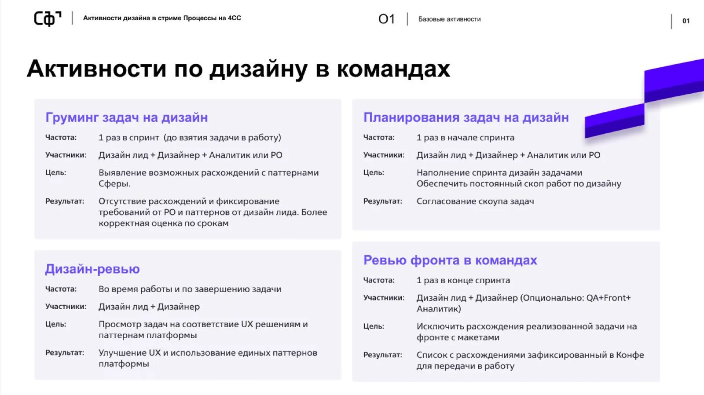
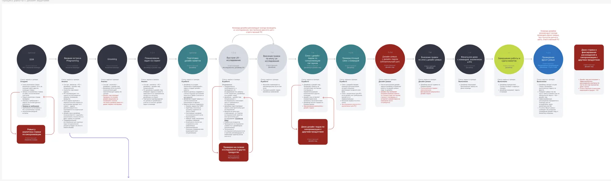
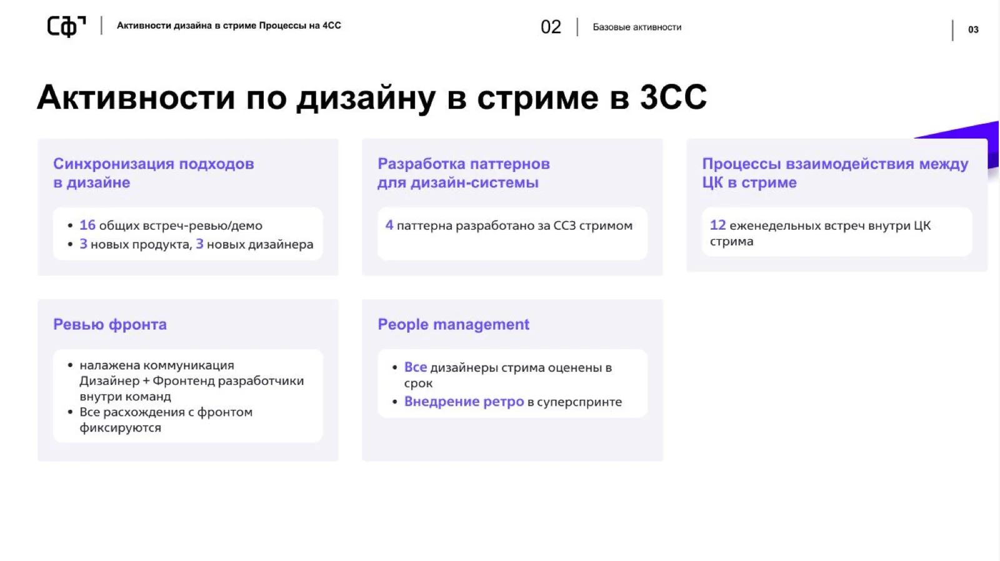
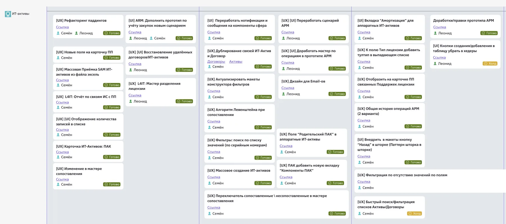
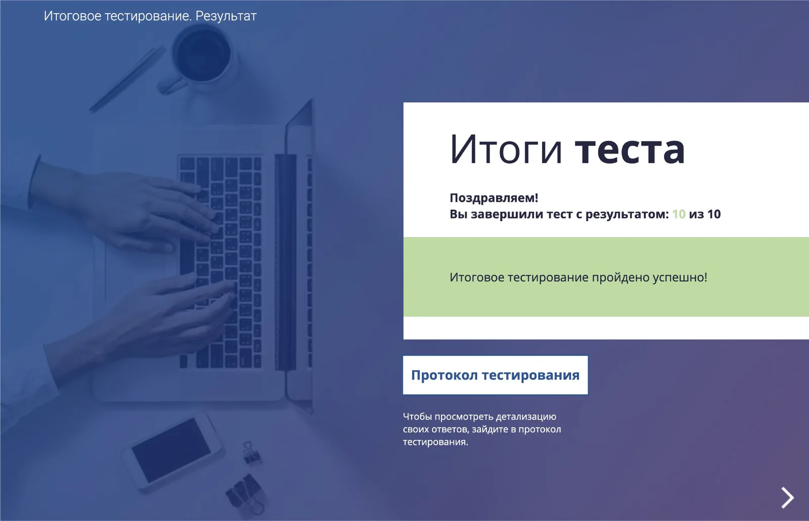

Менеджмент · практика
Команда как продукт
Руководитель дизайна отвечает за сроки и за людей, остальное — следствие. Разбираю по частям: ритм спринта, дизайн-система, найм и менторство, обучение, данные о состоянии команды.
Команда ломается на мелочах. Один дизайнер рисует по паттернам платформы, второй по памяти, фронтенд собирает третий вариант. На приёмке это выглядит как расхождения в макетах, а в переписке — как вопросы к дизайнеру. Моя работа как руководителя — убрать эту развилку до старта задачи.
- 8 дизайнеров в команде на пике
- −30% к сроку выполнения задач после перестройки процессов
- 12 стажёров, которых я вёл как наставник
- 100% стажёров прошли испытательный срок
Ритм
Одиннадцать активностей, которые держат спринт
До старта задачи нужно договориться, что именно рисуем. Это стоит одного груминга в спринт: дизайн-лид, дизайнер и аналитик или РО разбирают задачу и сверяют её с паттернами платформы. Если расхождение есть, оно всплывает здесь, а не на приёмке.
Дальше идёт планирование в начале спринта, чтобы у дизайна был постоянный скоп работ. Дизайн-ревью проходит по ходу задачи и после её завершения, ревью фронта — в конце спринта, вместе с фронтендом. К этому добавляются дизайн-джем на сложных задачах, внутреннее демо для соседних команд, встречи по статусу, синхронизация подходов, встречи один на один и ретро по итогам суперспринта.

Тридцать процентов срока съедали не макеты, а вопросы, которые задавали уже во время работы.
Всего одиннадцать активностей. Из них складывается ритм: у дизайнера всегда есть понятная следующая задача, а у лида — понимание, где спринт начинает ехать.
Полный путь задачи — двенадцать шагов, от DOR и дизайн-концепта до передачи дизайна в разработку. На схеме видно, где процесс зацикливается: если проверка UX выявила сложные сценарии, задача возвращается на дополнительное исследование, а не идёт дальше по инерции.

Тот же набор активностей работает на уровне стрима, только с другой плотностью. За суперспринт в стриме проходит шестнадцать общих встреч-рево и демо, выходит три новых продукта и появляется три новых дизайнера. Отдельно ведётся разработка паттернов для дизайн-системы: четыре паттерна за спринт. Коммуникация дизайнеров с фронтендом налажена так, что все расхождения фиксируются, а не обсуждаются задним числом.

РезультатСрок выполнения задач команды сократился на 30% за счёт оптимизации процессов.
Система
Дизайн-система живёт, пока её использует фронтенд
Дизайн-система — это продукт, и у него есть пользователи: дизайнеры, фронтенд, аналитики. Пока она живёт только в Figma, макет и код расходятся. Мы держим систему в актуальном состоянии, добавляем паттерны и компоненты и синхронизируем подход к использованию внутри команды.
Каждое правило описано до состояния, в котором его можно проверить: что происходит с формой, если пользователь сохраняет её с ошибкой в неактивной вкладке, как подсвечивается сама вкладка, что видно в overflow-меню. Такие спецификации снимают половину вопросов к дизайнеру.
РезультатРасхождений компонентов между дизайном и фронтендом нет. Разработка дизайна ускорилась на 25–30% за счёт унификации, а система развивается под требования бизнеса.
Дизайн-система задаёт, из чего собирать интерфейс. Доска задач задаёт, в каком порядке. Задачи помечены префиксами [UX] и [UI], у каждой есть исполнитель, ссылка на макет и статус: «Готово» или «Холд», если работа ждёт решения на стороне продукта.

Люди
Полтора месяца вместо трёх, если у стажёра есть наставник
Я провёл больше пятнадцати собеседований. Ни один дизайнер, которого я собеседовал, не был уволен по некомпетентности, а конфликтных ситуаций в команде не было. На интервью видно далеко не всё, поэтому дальше начинается основная работа: онбординг, наставник и регулярное погружение в процессы команды.
Двенадцать раз я был наставником для стажёров компании. Каждому нужен человек, к которому можно прийти с вопросом, а не только задача в трекере. Результат: все стажёры прошли испытательный срок, выход на плато продуктивности занял полтора месяца вместо трёх, из двенадцати человек семеро сейчас middle и пятеро junior.
Отдельная часть работы — обучения по наставничеству, фасилитации и управлению конфликтами.
Результат100% стажёров прошли испытательный срок, выход на плато продуктивности сократился вдвое, увольнений по некомпетентности среди собеседуемых дизайнеров нет.

Обучение
Раз в неделю — обучение для дизайнеров и аналитиков
Три темы закрывают большую часть проблем в работе команды. Первая — UX-исследования и сбор требований. Вторая — дизайн-система: зачем нужна, что это такое, какие бывают, как её собрать и как устроена наша. Третья — компоненты и шаблоны дизайна в Figma и Pixso.
Эффект заметен по переписке. Вопросов к дизайнеру про систему и паттерны стало меньше, неверных интерпретаций макета тоже. Отдельно перестроили сбор требований и встречи с заказчиком: стало понятнее, что фиксируем до старта.
Данные
Выгорание растёт циклами, и это видно заранее
Раз в суперспринт команда получает тепловую карту профессиональных рисков: продуктивность, выгорание, вовлечённость. Источников три — активность в мессенджерах, транскрибация рабочих встреч в текст и оценки по итогам суперспринта. Считает инструмент на базе ИИ, я читаю результат.
За двенадцать недель картина по команде такая:
Рис. 8Динамика по команде за двенадцать недель. Индекс: первая неделя = 100.
- Выгорание растёт циклами
- Пики приходятся на 3-ю, 6-ю и 9-ю недели и совпадают с релизными циклами.
- Лидеры под ударом
- У трёх самых продуктивных людей продуктивность падает, а выгорание растёт. Один из них дошёл до критической отметки 1,93 при высокой продуктивности 1,73.
- Парадокс роста
- У низкопродуктивной группы показатель вырос почти на 50%, но от очень низкой базы: 0,2 против нормы выше 0,7.
- Дивергенция вовлечённости
- У лидеров вовлечённость падает на 21% и 17%, у аутсайдеров растёт на 33% и 17%. Активность в мессенджерах не равна вовлечённости в работу.
- Порог по незакрытым задачам
- Вовлечённость падает примерно на 0,3 балла, когда у человека больше трёх незакрытых задач. Пик продуктивности держится 4–5 недель, дальше начинается спад.
- 33% команды в красной зоне по продуктивности
- 11% команды в красной зоне по выгоранию
- 44% с дисбалансом показателей: человек продуктивен и при этом выгорает
Что с этим делаю:
- Лидерам с высоким выгоранием снимаю около 30% нагрузки и делегирую менторинг.
- Профилактика — четыре часа без встреч каждый день и раннее оповещение при выгорании выше 1,2 балла.
- Рутину вроде тестов и отчётов автоматизирую, это около 15 часов в неделю.
- Группе с низкой продуктивностью — еженедельный check-in с понятными KPI и ротация задач, чтобы найти скрытые сильные стороны.
Смысл метрики — вовремя снять нагрузку с человека. Поэтому решения принимаются по динамике за двенадцать недель, а разговор идёт про конкретную слабую зону, а не про место в списке.
РезультатКризисы ловятся на ранней стадии, потеря сотрудников предотвращается, а менторинг становится точечным — по слабым зонам конкретного человека.
Итог
Что я забираю с собой
-
Срок держит ясность на входе Груминг и планирование сократили срок задач на 30%: до старта стало понятно, что именно рисуем.
-
Дизайн-система живёт, пока её использует фронтенд Унификация дала 25–30% времени разработки дизайна и убрала расхождения между макетом и кодом.
-
Стажёру нужен наставник, а не задача в трекере Полтора месяца до плато продуктивности вместо трёх, все двенадцать человек прошли испытательный срок.
-
Обучение снижает количество вопросов После цикла обучений вопросов к дизайнеру про систему и паттерны стало меньше, как и неверных интерпретаций макета.
-
Данные нужны для действия Снятая нагрузка и четыре часа без встреч работают лучше отчёта о выгорании.
Нужен руководитель дизайн-команды или разбор процессов?
Написать мне